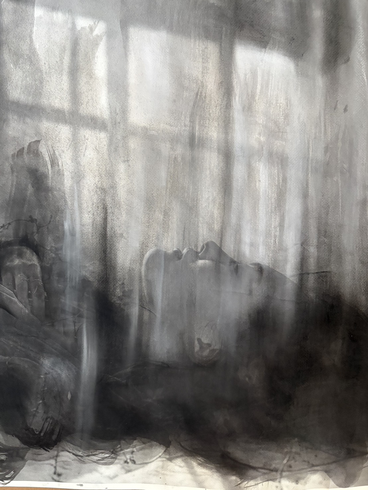

SELECTED WORKS

Work 01
Calcium Carbonate, Charcoal Powder, Carbon Pencil, Drawing and Ink Wash
Work 02
Calcium Carbonate, Charcoal Powder, Carbon Pencil, Drawing and Ink Wash
Work 03
Calcium Carbonate, Charcoal Powder, Carbon Pencil, Drawing and Ink Wash

Work 04
Calcium Carbonate, Charcoal Powder, Carbon Pencil, Drawing and Ink Wash
Work 05
Calcium Carbonate, Charcoal Powder, Carbon Pencil, Drawing and Ink Wash